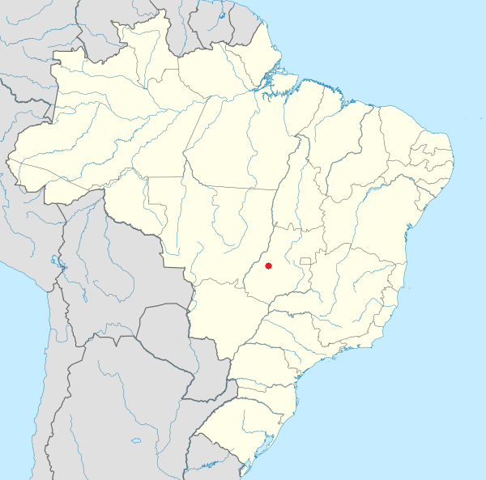

Hidrografia
O município é cortado por dois importantes rios, o Claro e dos Pilões, e ribeirões como o Fubá, Biquinha, Brumado e Matrinchã.
O Rio Claro, atravessa parcialmente a zona urbana de Israelândia encontrando-se já no município de Jaupaci com
o Rio dos Pilões, formando o Rio Claro, com maior volume de água gradualmente.
Rodovias
Temos duas importantes rodovias, a GO-060 que liga Goiânia a Cuiabá passando por Barra do Garças e
a Juca Rocha que liga Israelândia a Jaupaci e Montes Claros de Goiás.
Localização
Unidade federativa: Goiás
Municípios limítrofes: Iporá, Piloandia, Jaupaci
Distância até a capital: 189km
Características geográficas
Área: 577,480 km
2
Densidade: 5,04 hab./km
2
Clima: Não disponível
Fuso horário: UTC−3